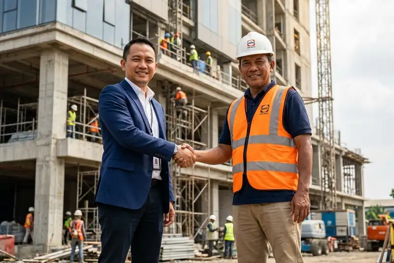

Daftar Isi
- Apa Itu Jasa Kontraktor Bangunan Terpercaya?
- Mengapa Kontraktor Terpercaya Penting untuk Investasi Jangka Panjang?
- Bagaimana Cara Kerja Jasa Kontraktor Bangunan Profesional?
- Apa Saja Faktor yang Menentukan Kualitas Kontraktor Bangunan?
- Manfaat Menggunakan Kontraktor Bangunan Terpercaya untuk Investasi
- Kesalahan Umum saat Memilih Kontraktor Bangunan
- Kontraktor Individu vs Perusahaan Kontraktor Bangunan: Mana yang Lebih Aman?
- Tips Memastikan Investasi Bangunan Tetap Menguntungkan dalam Jangka Panjang
- FAQ
Jasa kontraktor bangunan terpercaya adalah penyedia layanan konstruksi yang memiliki legalitas, pengalaman, dan rekam jejak jelas untuk mendukung proyek properti sebagai aset investasi jangka panjang.
- Kontraktor terpercaya memiliki legalitas usaha, portofolio, dan sistem kerja yang transparan.
- Kualitas konstruksi memengaruhi nilai jual kembali dan biaya perawatan properti di masa depan.
- Pemilihan kontraktor yang tepat mengurangi risiko pembengkakan biaya dan keterlambatan proyek.
- RAB yang rinci dan kontrak kerja tertulis menjadi dasar utama investasi yang aman.
- Pengawasan berkala selama proyek berjalan membantu menjaga standar kualitas bangunan.
Apa Itu Jasa Kontraktor Bangunan Terpercaya?
Jasa kontraktor bangunan terpercaya adalah layanan pelaksana konstruksi yang bekerja berdasarkan kontrak resmi, standar mutu material, dan pengawasan proyek yang terukur dari tahap perencanaan hingga serah terima.
Dalam praktiknya, kontraktor semacam ini biasanya memiliki badan usaha yang terdaftar, tim teknis dengan latar belakang jelas, serta portofolio proyek yang dapat diverifikasi. Kontraktor terpercaya juga umumnya menyediakan rencana anggaran biaya (RAB) yang rinci sejak awal, sehingga pemilik proyek dapat memperkirakan total biaya tanpa kejutan di tengah jalan.
Selain legalitas, aspek kepercayaan juga dibangun dari cara kontraktor berkomunikasi. Kontraktor yang baik biasanya memberikan laporan progres berkala, terbuka terhadap pertanyaan teknis, dan bersedia menjelaskan alasan di balik setiap keputusan desain atau material yang digunakan. Hal ini penting terutama bagi investor yang tidak selalu bisa memantau proyek secara langsung setiap hari.
Kontraktor bangunan terpercaya juga umumnya memiliki jaringan pemasok material dan tenaga kerja tetap, sehingga jadwal pengerjaan lebih stabil dibandingkan kontraktor yang bekerja secara ad hoc tanpa tim inti.
Mengapa Kontraktor Terpercaya Penting untuk Investasi Jangka Panjang?
Kontraktor terpercaya penting untuk investasi jangka panjang karena kualitas konstruksi secara langsung memengaruhi daya tahan bangunan, biaya perawatan, dan nilai jual kembali properti di kemudian hari.
Properti yang dibangun dengan standar konstruksi yang buruk cenderung membutuhkan biaya perbaikan lebih besar dalam beberapa tahun pertama, mulai dari masalah struktur, kebocoran, hingga instalasi listrik dan plumbing yang tidak sesuai standar. Biaya perbaikan semacam ini sering kali jauh lebih mahal dibandingkan selisih harga jasa kontraktor terpercaya di awal proyek.
Menurut data Kementerian PUPR, sektor konstruksi secara konsisten menyumbang sekitar 9-10 persen terhadap Produk Domestik Bruto Indonesia dalam beberapa tahun terakhir, mencerminkan betapa besarnya skala industri ini sekaligus tingginya variasi kualitas penyedia jasa yang beroperasi di dalamnya. Variasi kualitas inilah yang membuat proses seleksi kontraktor menjadi langkah krusial bagi investor properti.
Dari sisi investasi, properti dengan kualitas bangunan yang baik juga lebih mudah dipasarkan kembali, baik untuk dijual maupun disewakan, karena calon pembeli atau penyewa umumnya melakukan pengecekan kondisi fisik bangunan sebelum bertransaksi.
Bagaimana Cara Kerja Jasa Kontraktor Bangunan Profesional?
Jasa kontraktor bangunan profesional umumnya bekerja melalui tahapan konsultasi awal, perencanaan desain dan RAB, pelaksanaan konstruksi bertahap, pengawasan mutu, hingga serah terima proyek yang disertai masa garansi.
Tahap pertama biasanya berupa konsultasi kebutuhan, di mana kontraktor menggali informasi mengenai fungsi bangunan, anggaran yang tersedia, dan target waktu penyelesaian. Dari sini, tim teknis menyusun desain awal beserta estimasi biaya dalam bentuk RAB.
Setelah RAB disepakati, kontrak kerja ditandatangani dengan mencantumkan lingkup pekerjaan, jadwal, skema pembayaran bertahap, serta klausul terkait keterlambatan atau perubahan desain. Pelaksanaan konstruksi kemudian berjalan sesuai jadwal, dengan pengawasan rutin dari pihak kontraktor maupun, idealnya, pengawas independen yang mewakili kepentingan pemilik proyek.
Tahap akhir adalah serah terima, yang mencakup pengecekan hasil akhir dibandingkan dengan spesifikasi kontrak, serta penjelasan mengenai masa garansi konstruksi yang biasanya mencakup kerusakan struktural dalam periode tertentu setelah bangunan selesai.
Apa Saja Faktor yang Menentukan Kualitas Kontraktor Bangunan?
Kualitas kontraktor bangunan ditentukan oleh legalitas usaha, pengalaman proyek sejenis, transparansi RAB, kualitas material yang digunakan, serta konsistensi pengawasan selama proses konstruksi berlangsung.
Beberapa faktor yang perlu diperhatikan calon investor antara lain:
- Legalitas usaha, termasuk izin usaha jasa konstruksi dan sertifikasi tenaga ahli.
- Portofolio proyek sebelumnya yang sejenis dengan kebutuhan, misalnya rumah tinggal, ruko, atau gedung komersial.
- Kejelasan RAB, termasuk rincian material, upah kerja, dan estimasi waktu pengerjaan.
- Sistem pengawasan mutu, baik melalui tim internal maupun pengawas independen.
- Ketersediaan garansi konstruksi tertulis untuk pekerjaan struktural maupun finishing.
Pengalaman menangani proyek sejenis juga penting karena karakteristik bangunan investasi, seperti ruko atau properti sewa, sering kali memiliki kebutuhan teknis berbeda dibandingkan rumah tinggal biasa, misalnya terkait beban lantai, sirkulasi udara, atau efisiensi ruang untuk penyewa.
Manfaat Menggunakan Kontraktor Bangunan Terpercaya untuk Investasi
Manfaat utama menggunakan kontraktor bangunan terpercaya untuk investasi mencakup kepastian biaya, kualitas konstruksi yang lebih terjaga, serta perlindungan hukum melalui kontrak kerja yang jelas.
Kepastian biaya menjadi salah satu manfaat paling terasa, karena RAB yang rinci membantu investor menghindari biaya tambahan tak terduga di tengah proyek. Selain itu, kualitas konstruksi yang lebih terjaga akan berdampak pada rendahnya biaya perawatan dalam beberapa tahun ke depan, sehingga total biaya kepemilikan properti menjadi lebih efisien secara keseluruhan.
Manfaat lain adalah perlindungan hukum. Kontrak kerja yang jelas memberi dasar bagi pemilik proyek untuk menuntut perbaikan apabila terjadi kerusakan dalam masa garansi, atau untuk menyelesaikan sengketa apabila terjadi ketidaksesuaian antara hasil pekerjaan dan spesifikasi yang disepakati di awal.
Bagi investor yang berencana menyewakan atau menjual kembali properti, reputasi kontraktor yang digunakan juga dapat menjadi nilai tambah tersendiri saat proses pemasaran, terutama jika kontraktor tersebut dikenal luas di wilayah setempat.
Kesalahan Umum saat Memilih Kontraktor Bangunan
Kesalahan umum saat memilih kontraktor bangunan meliputi tergiur harga terlalu murah, tidak memeriksa legalitas usaha, serta tidak memiliki kontrak kerja tertulis yang rinci.
Harga yang jauh di bawah pasaran sering kali menjadi tanda adanya pengurangan kualitas material atau tenaga kerja yang tidak berpengalaman. Investor sebaiknya membandingkan beberapa penawaran RAB secara rinci, bukan hanya melihat angka total, untuk memahami komponen biaya yang membedakan satu kontraktor dengan lainnya.
Kesalahan lain adalah tidak memeriksa legalitas dan portofolio kontraktor sebelum menandatangani kontrak. Tanpa verifikasi ini, investor berisiko bekerja sama dengan pihak yang tidak memiliki kapasitas teknis maupun keuangan yang memadai untuk menyelesaikan proyek sesuai jadwal.
Tidak adanya kontrak kerja tertulis yang rinci juga menjadi sumber sengketa yang umum terjadi. Kesepakatan lisan tanpa dokumentasi menyulitkan proses klaim garansi atau penyelesaian masalah apabila hasil pekerjaan tidak sesuai harapan.
Kontraktor Individu vs Perusahaan Kontraktor Bangunan: Mana yang Lebih Aman untuk Investasi?
Perusahaan kontraktor bangunan umumnya lebih aman untuk proyek investasi karena memiliki struktur legal, tim kerja tetap, dan sistem administrasi yang lebih jelas dibandingkan kontraktor individu atau tukang lepas.
Kontraktor individu bisa menjadi pilihan untuk proyek berskala kecil dengan anggaran terbatas, namun umumnya tidak memiliki jaminan kelangsungan tim jika terjadi kendala di tengah proyek, seperti anggota tim yang berhenti bekerja. Selain itu, kontraktor individu jarang menyediakan garansi tertulis yang mengikat secara hukum.
Perusahaan kontraktor, di sisi lain, biasanya memiliki tim inti yang lebih stabil, akses ke pemasok material dengan harga lebih konsisten, serta kemampuan menangani proyek berskala menengah hingga besar secara paralel. Bagi investor yang membangun properti sebagai aset jangka panjang, faktor kestabilan tim dan legalitas usaha ini menjadi pertimbangan penting untuk mengurangi risiko proyek terhenti di tengah jalan.
Meski demikian, biaya jasa perusahaan kontraktor umumnya lebih tinggi dibandingkan kontraktor individu, sehingga keputusan akhir tetap perlu disesuaikan dengan skala proyek dan anggaran yang tersedia.
Tips Memastikan Investasi Bangunan Tetap Menguntungkan dalam Jangka Panjang
Tips utama untuk menjaga investasi bangunan tetap menguntungkan adalah memilih kontraktor dengan rekam jejak jelas, menyusun RAB yang realistis, serta melakukan pengawasan berkala selama proses konstruksi berlangsung.
Beberapa langkah praktis yang dapat dilakukan investor antara lain:
- Meminta referensi dan mengunjungi lokasi proyek kontraktor yang sudah selesai dibangun.
- Menyusun RAB dengan komponen biaya yang rinci, termasuk cadangan dana untuk kebutuhan tak terduga.
- Menetapkan jadwal pembayaran bertahap yang disesuaikan dengan progres pekerjaan di lapangan.
- Melibatkan pengawas independen apabila proyek berskala besar atau kompleks.
- Menyimpan seluruh dokumen kontrak, RAB, dan garansi sebagai arsip investasi.
Selain aspek teknis, investor juga disarankan mempertimbangkan lokasi dan fungsi bangunan sejak awal perencanaan, karena kesesuaian antara desain bangunan dan kebutuhan pasar di wilayah tersebut turut memengaruhi potensi nilai jual maupun sewa properti di masa mendatang.